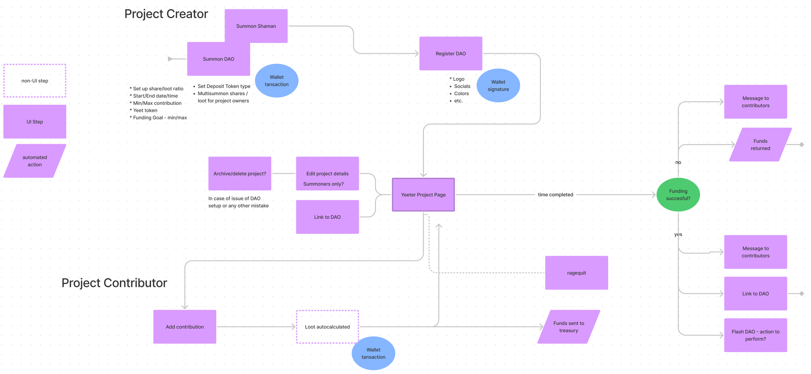
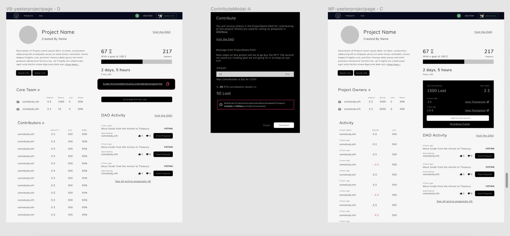

Yeeter Fundraising Case Study
- Role
- Sole designer, UX design / UI Design / Branding and Illustration — I worked on this project from initial requirement gathering through to review of shipped product.
- Started work
- Mid-December 2021
- Released
- Feb 2022
- Volume of funds through platform
- 871.67 ETH / $73.3k DAI (equivalent to USD)
The Project Brief
The Yeeter platform allows users to create a crowdfunding project with multiple core team members and once funding is added by a user they have the option at any time to remove their funds.
With the success of another crowdfunding platform (Juicebox) in web3, we decided to create a version of a crowdfunding app that would lay over our architecture. From a business perspective, this would allow us to:
- Generate funds (3% of raised funds go to us) for further platform creation
- Funnel for new people onto our platform
- Provide a product that enhances the crowdfunding landscape overall
- Allow the parent product to use it for fund raising ourselves
Step 1: Understand & Goals for Initial Release
Get to Know the Smart Contracts
The origination of this project came from a lead backend developer making a major update to our contracts as a starting place for the team. The first step in this project was to get a deep understanding of smart contracts: What can they do? What limitations will we run up against?
Understand the Landscape
I went through a small handful of other fundraising products. Popular ones in web2 such as Kickstarter and Indiegogo as well as web3 options such as Juicebox. The goal was to get an idea of shared patterns across the apps and any crucial features that we may have missed making a fundraising platform for the first time.
Community Input
From the technical and internal understanding of the project, we also:
- Gathered insights from community leaders that were interested in starting projects on this platform
- Started helping foster a few small projects that could use a small amount of funding and working toward getting them up and running as some of our first projects
We found a few key points — that they were interested in something that overlaid well into the existing parent platform, because they were already embedded there and they were looking for an extremely easy way for their supporters to send crypto funds to them and have them instantly available for governance by the DAO.
Step 2: Information Architecture & Flow

User Task Flow
I made and iterated with the team on a user task flow diagram to get a good idea of when and were data will be used, how it should function and how you will interact with the blockchain.
Step 3: Wireframing the Structure
From there I created wireframes for early input from on direction. Like the steps before it, there was a lot of back and forth and iterations with the team.

Step 4: Finalizing Designs
As everything got locked in and iterations were completed, I created simple specs for this project for the developers to follow.
This being a small, lean team with a lot of communication and a fast pace, I left them relatively simple. Mainly consisting of:
- Examples of screens for each stage of the project page (someone has or hasn’t contributed, funding met/not met)
- The main project view
- The project landing site, working with copy editors


Step 5: Development & Release
- I worked with 3 engineers and a copy writer on creation of the software, finding collaborative solutions that satisfy usability and technical restraints
- Make adjustments and cutting extras based on timeline
- Quick iterations during first few raises to improve usability
Lessons Learned
- As an organization we should have put more energy and resources behind the project after it was built, it could be much more successful with a few updates and a few key features built out as well as marketing.
- We decided to slim down the area for the description of the project with the expectation of returning to improve this later. We should have focused on building that into the Project pages first to match how a lot of the competitors. There is nothing more important than the descriptor of the project, it’s the soul of the fundraiser. We unfortunately haven’t been able to return and update this.